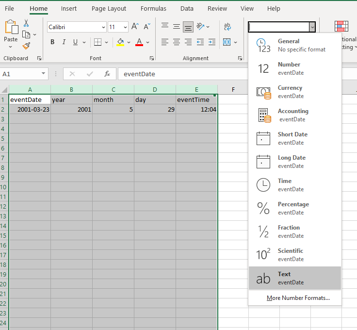
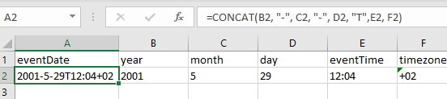
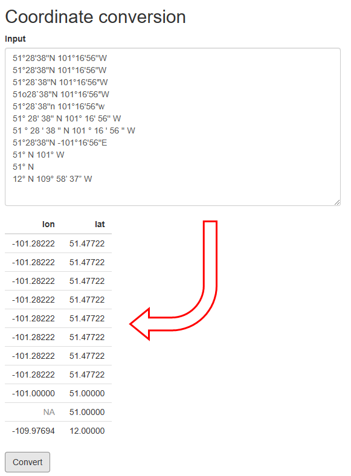
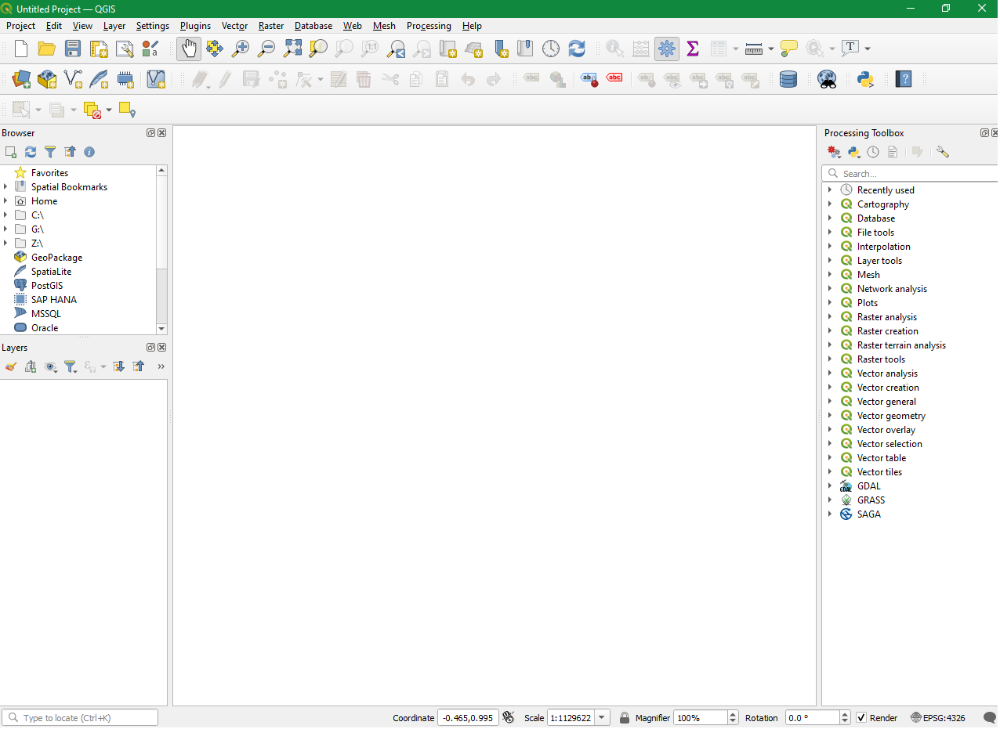
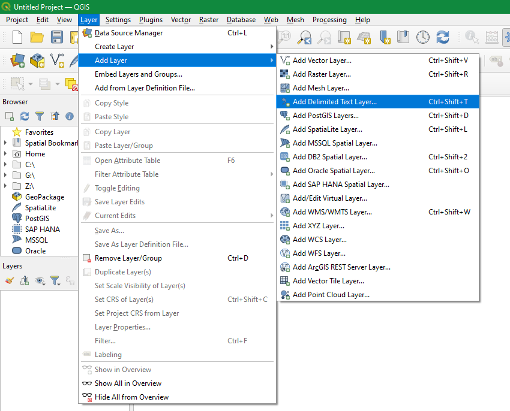
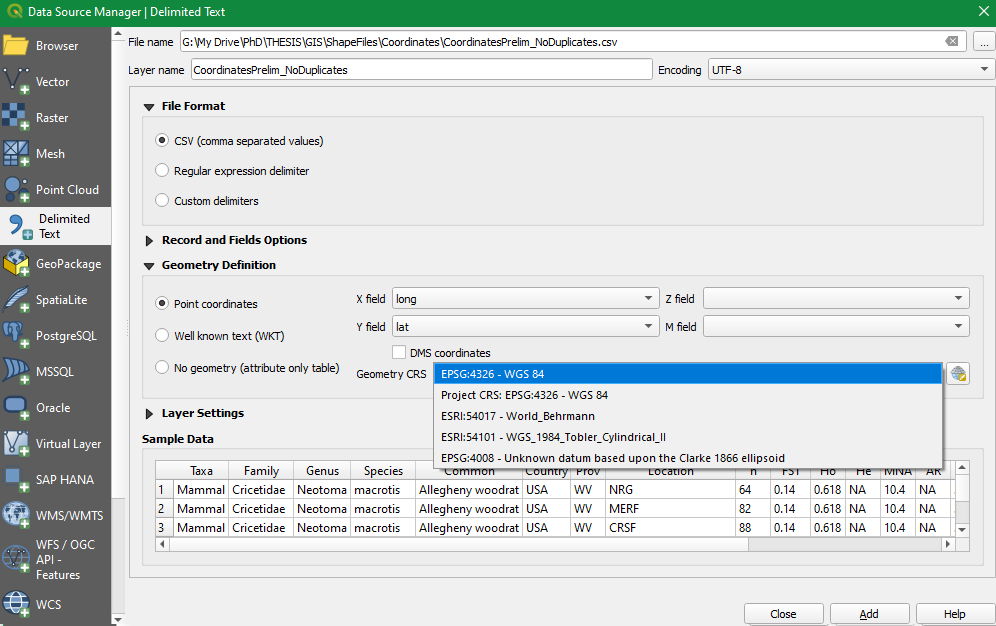
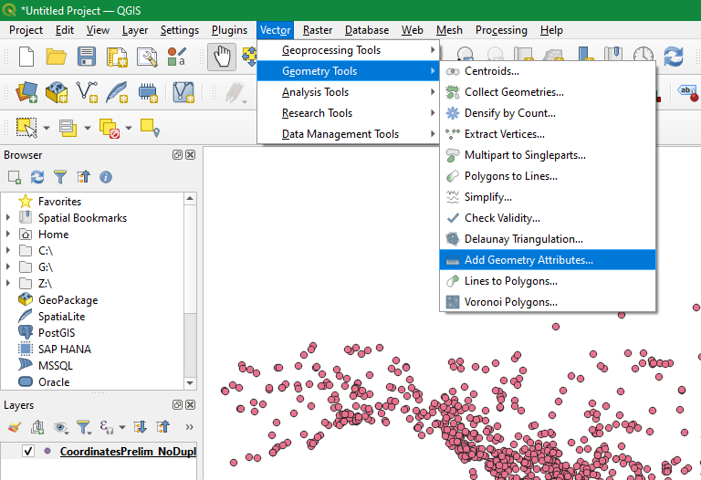
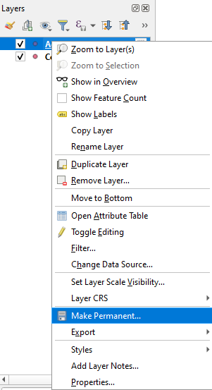

Other Important Data Formatting Steps
After creating data tables and mapping terms to DwC, additional data formatting steps may be needed and/or some common issues may arise. On this page, you will find guidelines for specific data formatting cases, including:
- Temporal issues: dates/times
- Historical data
- Spatial issues: coordinate conversion
- Missing required fields
Temporal: Dates and times
The date and time at which an event took place or an occurrence was recorded goes in eventDate. This field uses the ISO 8601 standard. OBIS recommends using the extended ISO 8601 format with hyphens.
All dates in OBIS become translated to UTC during the quality control process implemented by OBIS. Formatting your dates correctly ensures there will be no errors during this process.
ISO 8601 dates can represent moments in time at different resolutions, as well as time intervals, which use / as a separator. Date and times are separated by T. Timezones can be indicated at the end by using + or - the number of hours offset from UTC. If no timezone is indicated, then the time is assumed to be local time. When a date/time is recorded in UTC, a Z should be added at the end. Times must be written in the 24-hour clock system. If you do not know the time, you do not have to provide it. Please do not indicate unknown times as “00:00” as this indicates midnight.
Not every piece of time information is necessary, but a generalization of how to format dates and times looks like:
YYYY-MM-DDT[hh]:[mm]:[ss] [+/-XXXX OR Z]
Some specific examples of acceptable ISO 8601 dates are:
Dates:
- 1948-09-13
- 1993-01/02
- 1993-01
- 1993
Dates with Specific Times:
- 1973-02-28T15:25:00
- 2008-04-25T09:53
Dates with Time Zones:
- 2005-08-31T12:11+1200
- 1963-03-08T14:07-0330
- 2013-02-16T04:28Z
Date and Time Intervals:
- 1993-01-26T04:39+12/1993-01-26T05:48+12
It is important to note that although ISO 8601 also supports ordinal dates (YYYY-DDD) and week dates (YYYY-Www-D), these formats are not supported by OBIS. Additionally, ISO 8601 guidelines for durations should not be used. Durations for an event (e.g., length of observation) can instead be indicated with the DwC terms startDayOfYear and endDayOfYear. Durations refer to the actual length of time an event (e.g., occurrence) occurred, whereas intervals indicate the time period during which an event was recorded.
A note about intervals: Take care when entering date intervals as, for example, entering 1960/1975-08-04 indicates that the event or observation started any time in 1960, and ended any time on 1975-08-04. If you know the exact date and time, you should specify that information. This also helps for continuous samplings and time-series integrated datasets.
If you have a mix of dates and times for different aspects of a sampling event, you can embed this information in the Event Core table using hierarchies of date structure. To do this, you can use separate records for events, and specify each event date individually. See example.
For uncertainty regarding the date of the event, see guidelines.
Tips
To ensure your date is formatted correctly, it may be easiest to begin by populating the year, month, and day fields first. If the specific time of sampling is known, populate that into eventTime as well. When you fill these fields, we recommend ensuring the numbers are encoded as Text, not as General or numeric as Excel often tries to interpret what it thinks the content “should” be. Otherwise you may run into problems with Excel auto formatting your numbers in ways you don’t want.
A caution about dates and Excel: Excel is unfortunately notorious for causing issues in saving dates. The Data Carpentries have produced this exercise which demonstrates how Excel interprets dates and numbers, sometimes converting numbers into dates and vice versa. The exercise is simply a demonstration of Excel - it does not provide advice on formatting dates for OBIS.
You can encode fields as text in Excel by highlighting the cells of interest, navigating to the Number Format on the Home ribbon and selecting “Text”, see screenshot below. Be careful when you do this change of format, as some columns (e.g. time) may become formatted into a decimal or other unexpected format!

Then you can use Excel to concatenate each field together, adding the time zone at the end, using the general format:
=CONCAT(YEAR, "-", MONTH, "-", DAY, "T", EVENTTIME, TIMEZONE)
Note: You can also use the Canadensys date parsing tool to help you convert dates or parse them into component parts.
Date formats in Excel can be very dependent on your computer system region custom and not all of them have the ISO 8601 format included. Therefore you can type the date in the requested format but it will automatically revert the format according to your Windows system region settings. You can change your system region by: navigating to Control Panel > All Control Panel Items > Region and then select “English (United States)” or “English (United Kingdom)”. The YYYY-MM-DD format will appear among the choices within the Format cells - Date options.
If your computer language is not set to English, you may encounter additional issues with Excel. It may change the format of your date even after you save the document. Changing your computer system’s language to English can help, but you may still run into issues. You may also try using other office management softwares, like LibreOffice which in this case is more friendly. In general, we advise you to be very careful when formatting the eventDate field, and to select the “Text” formatting (as above) and to save your file as a .CSV.
It is good practice to place the verbatim event date/time description into the verbatimEventDate field. Any modifications you make during data formatting should be recorded in the eventRemarks field, and we recommend taking good notes in a personal reference file.
This video provides a demonstration of how you can format dates to ISO 8601, including how to resolve difficulties you might run into (some which are also discussed below).
How to handle mixed date information
When the sampling date is unclear due to a mix of date types and durations, you can use the hierarchical event structure in the Event core to help format and associate dates (and other information) with the correct sampling event. Often times it is useful to break up each type of event into separate records according to the event hierarchy.
Let’s look at a fictional dataset to demonstrate this. In this example, there is a project called Maple. This project has a cruise that takes place in May and June which takes samples at three different sites. The project has data for three years, beginning in 1993. How do we capture all this information in our dataset? And how do we format eventDate to reflect these different times and durations?
We can embed this information using a different eventID and parentEventID for each level within the project - the reoccurring cruise, the station sites, and then the samples themselves. We have added a column here for “Event Type” for the sake of example. At this time, there is no Darwin Core event type term, however there is discussion for its creation.
Our example dataset would then look like the following:
| parentEventID | eventID | Event type | eventDate | eventRemarks |
|---|---|---|---|---|
| MAPLE_1993_crs | cruise | This is the first year | ||
| MAPLE_1994_crs | cruise | This is the second year | ||
| MAPLE_1995_crs | cruise | This is the third year | ||
| MAPLE_1993_crs | MAPLE_1993_crs_st1 | station | This is the first year, first site | |
| MAPLE_1993_crs | MAPLE_1993_crs_st2 | station | This is the first year, second site where samples were taken over two days | |
| MAPLE_1993_crs | MAPLE_1993_crs_st3 | station | This is the first year, third site | |
| MAPLE_1993_crs_st1 | MAPLE_1993_crs_st1_s1 | sample | 1993-05-05T10:13-04 | This is the first year, first site, first sample |
| MAPLE_1993_crs_st1 | MAPLE_1993_crs_st1_s2 | sample | 1993-05-05T10:38-04 | This is the first year, first site, second sample |
| MAPLE_1993_crs_st2 | MAPLE_1993_crs_st2_s1 | sample | 1993-05-19T23:40-04 | This is the first year, second site, first sample |
| MAPLE_1993_crs_st2 | MAPLE_1993_crs_st2_s2 | sample | 1993-05-20T01:24-04 | This is the first year, second site, second sample |
| MAPLE_1993_crs_st3 | MAPLE_1993_crs_st3_s1 | sample | 1993-06-01T09:21-04 | This is the first year, third site, first sample |
| MAPLE_1993_crs_st3 | MAPLE_1993_crs_st3_s2 | sample | 1993-06-01T09:57-04 | This is the first year, third site, second sample |
You can see that the eventDate for the parent events does not need to be provided - only the dates for the actual samples are required.
Historical data
OBIS recognizes the difficulties in formatting historical, archaeological and paleontological data. This kind of data is sometimes seen as “specialist” or “niche” when it comes to sharing in globally accepted databases that are accessible and recognised in academic, research and scientific forums.
Some of the nuances associated with historical data have to do with the change in calendar systems, from the Julian calendar to the currently used (by most countries) Gregorian calendar metric system. This change was implemented in 1582, so any datasets with data representing periods that predate this year must be checked and converted to the standard Gregorian calendar system. Additionally, there is no year zero, only -1 and 1, where -1 is BCE (Before Common Era) and 1 is CE (Common Era). This can make interpretation of historical dates more challenging as such dates will need to be converted to align with ISO 8601 standards.
To accommodate such challenges the OBIS Historical Data Project Team recommends the following:
- Always populate
verbatimEventDatewith the originally documented date so that it can be preserved. Place converted dates that align to ISO 8601 in theeventDatefield, and document the changes you made to the original ineventRemarks. - When the exact date is unknown, provide a date range, e.g. the period 21 November 1521 to 29 August 1612 records as 1521-11-21/1612-08-29.
- For archaeological data, use terms from the Darwin Core class GeologicalContext and/or the Chronometric Age Extension. GeologicalContext terms can be used to capture information such as periods or ages, however the Chronometric Age extension allows for more thorough descriptions of the time period and can link to the Event core table. For such records,
eventDatewould be populated with the date of collection. N.B. currently, the Chronometric Age extension will not be aggregated when publishing to OBIS, but the extension will be available when an individual dataset is downloaded. - If the historical record contains uncertain or sensitive location information, generalize the location information using polygons or lines as described in this Manual.
For historical data originating from old records, such as ship logs or other archival records, we understand there can be a variety of issues in interpreting and formatting data according to DwC standards. If you need further help with historical data formatting, we recommend submitting a Github issue, or contacting the OBIS-OPI node who focuses on Oceans Past historical, archaeological, and paleontological data series.
Spatial
Converting Coordinates
All coordinates provided in the decimalLatitude or decimalLongitude fields in OBIS must be in decimal degrees. To convert coordinates from degrees-minutes-seconds into decimal degrees, you can use this Coordinate Conversion tool that OBIS has developed. This tool will convert any coordinate (or list of coordinates on a separate line) in a degrees-minutes-seconds format into decimal degrees, even partial coordinates. To use it, simply copy and paste your coordinates into the box provided and click Convert. For example:

Watch this video for a demonstration on use of this tool.
If your coordinates are in UTMs, then coordinate conversion can be a bit trickier. We suggest using the following conversion tool to convert from UTM to decimal degrees. Note it is very important to ensure you have the correct UTM zone, otherwise the coordinate conversion will be incorrect. You can use this ArcGIS map tool to visually confirm UTM zones.
Geographical format conversion
In OBIS, the spatial reference system to be documented in geodeticDatum is EPSG:4326 (WGS84). If your spatial data are not already in this format, you may have to convert it. To do this there are a few approaches: QGIS (or ArcGIS), R, or Python. We provide some short guidance for each, however if you are struggling to convert your data to WGS84 please contact helpdesk@obis.org or send a message on the OBIS Slack.
QGIS
You can load a .csv file containing your coordinates to be reprojected into QGIS. Opening a new project, first set the global projection to WGS84 EPSG:4326. In the bottom right corner, click the Project Properties to change the Project Coordinate Reference System (CRS). A pop up window will allow you to search for and select WGS84 EPSG:4326. Click OK.

To load your .csv file containing the longitude and latitude coordinates, go to Layer < Add Layer < Add Delimited Text layer…

A popup window will allow you to browse and select your .csv file. Open the Geometry Definition portion of the window and map the field containing longitude values to the X field and latitude to the Y field. Select the CRS that these coordinates were recorded as from the drop down menu. Then click Add and close the window.

Go to Vector < Geometry Tools < Add Geometry Attributes

Make sure the input layer is your coordinate file. Under the Calculate using, select Project CRS (because we set the Project CRS to the desired projection). Click Run. This will create a new layer with an additional two columns called Xcoord (longitude) and Ycoord (latitude). These fields contain the coordinates in the desired projection (i.e., WGS84). You can view these columns by right clicking and opening the layer’s attribute table. To export the file, right click the layer and click Make Permanent. Then save the .csv.

For more details see this QGIS guide on reprojection.
R
To reproject coordinates in R, you can use functions in the sf package. A thorough tutorial using this package can be found here.
Python
You also have the option to reproject data using the Python library Geopandas. In this package there is a utility called to_crs that will reproject data. A tutorial to do this can be found here.
Missing required fields
If you are a node manager and one of the datasets in your IPT is missing data, you should prepare a brief report to contact the data provider and outline what is missing. Get in contact with original data provider if possible. If it is not possible to contact the original data provider (frequently the case for historical datasets), do your best to follow the guidelines below to fill in data. However, do not guess or make assumptions if you are unsure. For all fields inferred, please record notes in the eventRemarks, occurrenceRemarks, or ‘identificationRemarks` field, as applicable.
If you are a data provider and notice or been notified that you are missing one (or more) of the eight required terms for OBIS, please proceed accordingly for each term.
To resolve missing fields marked as required by OBIS, there are several things you can do, depending on which required field is missing. Follow the guidelines below for each term.
occurrenceIDoreventID
Create a unique occurrenceID for each of your observations. These IDs can be generated by combining dates, location names, and sampling methods.
eventDate
Ensure your eventDate is specified for each event, formatted according to ISO 8601 standards (e.g., YYYY-MM-DD). We have developed step by step guidelines to help you format contemporary dates and durations into ISO formatting. If your date falls outside the range of acceptable dates - i.e., historical or geological data occurring before 1583 - please follow recommendations for historical data.
For any eventDate that is inferred from literature, you should document the original date in the verbatimEventDate field.
decimalLongitudeanddecimalLatitude
First, if you have coordinate data, make sure they are converted into decimal degrees. If you do not have specific coordinate data then you must approximate the coordinates based on locality name. You can use the Marine Regions gazetteer to search for your region of interest and obtain midpoint coordinates. Guidelines for using this tool and for dealing with uncertain geolocations can be found here. You will have to make some comments in the georeferenceRemarks field if you are estimating coordinates.
scientificName
This field should contain only the originally documented scientific name down to the lowest possible taxon rank, even if there are misspellings or if it is a current synonym. Class or even Kingdom levels are accepted if more specific taxonomic levels are unknown. Comments about misspellings, etc. can be documented in the taxonRemarks field. Note that there may be special cases for eDNA and DNA derived data, see specific guidelines for these cases.
You may encounter challenges filling this field if the species name is based on description or if its taxonomy was uncertain at the time of sampling. For such uncertain taxonomy situations, see our guidelines here.
scientificNameID(strongly recommended)
If you cannot obtain the required Life Science Identifier (LSID) from taxon matching with WoRMS then you must contact World Register Marine Species to have an LSID created for your taxon. You will need to confirm that the species is marine. OBIS does not parse LSIDs from other sources (e.g., Integrated Taxonomic Information System, Catalog of Life), but if you want to include other LSIDs alongside the WoRMS LSID, they must be specified in a predictable format.
occurrenceStatus
Because occurrenceStatus is a binary field, “presence” or “absence”, this field can usually be easily inferred by data. If there are associated measurements or a record of an observation, the taxon in question would be present. If a particular species/taxa is present in one sample, but missing from another, then you could identify that species as absent from the second sample.
basisOfRecord
basisOfRecord distinguishes what type of record is in your data. For records pertaining to a collected or stored specimen, you must choose one of the following terms:
PreservedSpecimenFossilSpecimenLivingSpecimen
For records pertaining to an observation in the wild, you should use:
HumanObservation(e.g., observation in the wild)MachineObservation(e.g., photograph, acoustic detection, etc.)MaterialSample(e.g. DNA sequences, DNA detection)
For records pertaining to literature data, basisOfRecord should always reflect the evidence upon which the Occurrence record was based. For example, a researcher’s record based on photographs should specify MachineObservation, otherwise specifications should be HumanObservation (see relevant GitHub discussion).
For specifics on when to use each of these and which other fields should be populated along with them, see the guidelines on record-level terms.